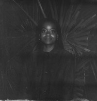
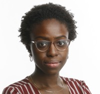

POV
51 people whose festival biography mentions POV. A mention can mean a job, a past job, a grant, a broadcast or an award: read the bio for which.
 Simon KilmurryModerator, panelist, filmmaker · 3 editions, 2016–2025International Documentary Association
Simon KilmurryModerator, panelist, filmmaker · 3 editions, 2016–2025International Documentary Association- Adam SegalFestival team · 3 editions, 2017–2019
- Heather CourtneyPanelist, filmmaker · 2 editions, 2017–2018
- Ramona DiazFilmmaker, panelist · 2 editions, 2019–2020
 Jon-Sesrie GoffPanelist · 2 editions, 2017–2021Smithsonian National Museum of African American History and Culture
Jon-Sesrie GoffPanelist · 2 editions, 2017–2021Smithsonian National Museum of African American History and Culture- Judith HelfandPanelist, workshop leader, festival team · 2 editions, 2021–2022Chicken & Egg Pictures
 Elizabeth LoFilmmaker, panelist · 2 editions, 2021–2024
Elizabeth LoFilmmaker, panelist · 2 editions, 2021–2024 Hanna Lane MillerPanelist, filmmaker · 2 editions, 2018–2025
Hanna Lane MillerPanelist, filmmaker · 2 editions, 2018–2025- Nancy SchwartzmanPanelist, filmmaker · 2 editions, 2018–2019


 Macky AlstonFilmmaker, panelist · 2024
Macky AlstonFilmmaker, panelist · 2024 César Martínez BarbaFilmmaker · 2021
César Martínez BarbaFilmmaker · 2021 Opal Hope BennettPanelist · 2021
Opal Hope BennettPanelist · 2021 Yoni BrookPanelist · 2021
Yoni BrookPanelist · 2021
- Rodrigo DorfmanPanelist · 2019
 Rachel FalconeFilmmaker, panelist · 2024
Rachel FalconeFilmmaker, panelist · 2024- Yance FordPanelist · 2018
 Rick GoldsmithFilmmaker · 2023
Rick GoldsmithFilmmaker · 2023- Erika HowardPanelist · 2020

Crystal KayizaPanelist, filmmaker · 2025
Yvonne Ashley KouadjoPanelist · 2021
- Shola LynchWorkshop leader · 2018Schomburg Center for Research in Black Culture, The New York Public Library
- Stephen MaingPanelist · 2018
- David OsitFilmmaker · 2020
 Sierra PettengillFilmmaker · 2021
Sierra PettengillFilmmaker · 2021 Katrine PhilpFilmmaker · 2018
Katrine PhilpFilmmaker · 2018 Michael PremoFilmmaker, panelist · 2024
Michael PremoFilmmaker, panelist · 2024- Heidi ReinbergWorkshop leader · 2019
 Bernardo Ruiz2024
Bernardo Ruiz2024 Marjan SafiniaPanelist · 2021
Marjan SafiniaPanelist · 2021 Joshua SeftelPanelist, filmmaker · 2025
Joshua SeftelPanelist, filmmaker · 2025 Kevin ShawPanelist · 2023
Kevin ShawPanelist · 2023 Chi-hui YangPanelist · 2021
Chi-hui YangPanelist · 2021